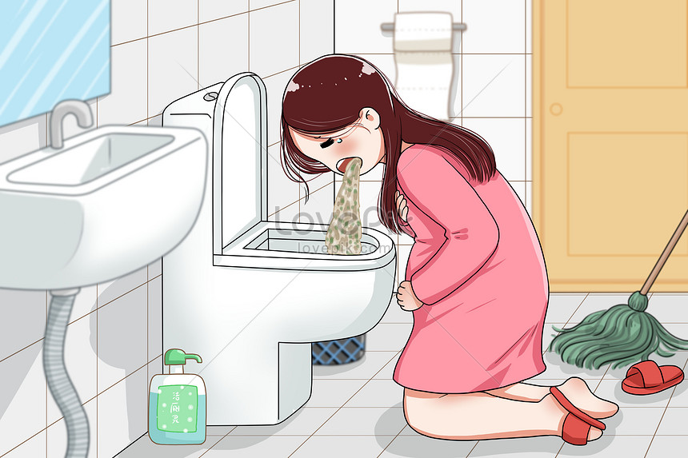
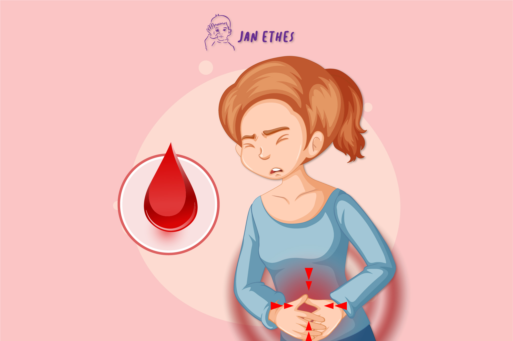
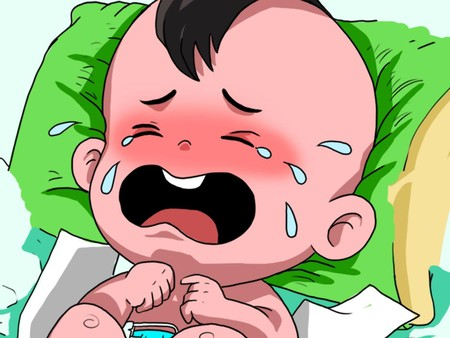

Prosedur operasi apapun termasuk operasi caesar apalagi sekaligus sterilisasi mengandung efek samping. Efek samping ini akan dirasakan sesudah pelaksanaan operasi.Operasi caesar diketahui dapat menimbulkan efek samping pada bayi, yakni daya tahun tubuh yang tidak sebaik jika lahir secara normal. Hal ini diyakini karena bayi yang lahir melalui prosedur caesar tidak terpapar flora atau bakteri baik yang ada pada jalan lahir di vagina ibu. Akan tetapi efek samping tersebut dapat diatasi dengan pemberian ASI.
Sementara bagi ibu, efek samping setelah operasi caesar salah satunya adalah merasa pusing, mual, dan mati rasa sebagai dampak penggunaan obat anestesi selama operasi. Ibu juga mungkin mengalami efek samping jangka panjang setelah operasi caesar, di antaranya:
Tingkat kesuburan menurun
Timbul rasa nyeri saat berhubungan intim (dyspareunia)
Meningkatkan risiko mengalami plasenta letak rendah (plasenta previa), yakni kondisi plasenta berada di dekat mulut rahim, sehingga dapat menyebabkan perdarahan dan kelahiran prematur pada kehamilan selanjutnya.
Meningkatkan risiko perlekatan plasenta (plasenta akreta), yaitu kondisi plasenta tumbuh terlalu dalam hingga ke otot rahim, sehingga plasenta menjadi sulit lepas.
Meningkatkan risiko plasenta lepas secara dini (abruptio plasenta) saat kehamilan berlangsung yang dapat menyebabkan kurangnya oksigen dan nutrisi pada janin, serta perdarahan pada ibu.
Meningkatkan risiko ruptur atau robek pada rahim di kehamilan selanjutnya, yang menyebabkan janin keluar dari rahim.
Meningkatkan risiko keguguran pada kehamilan selanjutnya.
Setiap tindakan medis, termasuk prosedur bedah caesar, pasti memiliki faktor risiko dan efek samping. Namun yang lebih penting adalah bagaimana mempersiapkan operasi agar dapat meminimalkan faktor risiko dan efek samping yang mungkin terjadi. Tak lupa, berikan ASI eksklusif hingga Si Kecil berusia 6 bulan diikuti dengan pemberian MPASI yang aman dan tepat. Berikut ini adalah efek samping yang mungkin akan dirasakan perempuan sesudah menjalani operasi caesar sekaligus
• Mual dan sakit kepala akibat anestesi

Anestesia atau lebih dikenal oleh masyarakat dengan istilah 'pembiusan' merupakan tindakan medis agar pasien tidak merasakan nyeri selama menjalani pembedahan.Ketika melahirkan secara caesar, ibu akan menjalani proses anestesi. Meski jarang terjadi, efek samping obat bius, seperti pusing, mual, dan mati rasa, bisa saja terjadi. Namun, kondisi ini biasanya akan hilang dengan sendirinya beberapa hari setelah persalinan atau ketika efek obat bius berangsung mereda.
• Terjadinya Bekuan Darah
Melahirkan secara caesar juga meningkatkan risiko terjadinya bekuan darah (trombosis). Bekuan darah yang menyumbat pembuluh darah vena yang ada di tungkai akan menyebabkan deep vein thrombosis. Kondisi ini ditandai dengan nyeri di kaki, kemerahan pada kulit kaki, dan kaki terasa hangat.Namun, Anda bisa menurunkan risiko ini dengan menggerakkan kaki sesekali atau menyangga kaki dengan bantal saat berbaring. Dokter juga akan meresepkan obat antikoagulan untuk mengurangi risiko terbentuknya gumpalan darah.
• Pendarahan di perut mungkin saja terjadi pascaoperasi
Risiko yang bisa terjadi ketika melahirkan secara caesar berikutnya adalah terjadinya perdarahan. Risiko untuk kehilangan banyak darah saat operasi caesar cenderung lebih besar dibandingkan saat melahirkan normal. Meski demikian, kondisi ini umumnya jarang terjadi, tidak hanya pendarahan saja Cedera saat operasi, misalnya kandung kemih tidak sengaja tersayat, bisa saja terjadi meski sangat jarang. Risiko terjadinya cedera ini akan makin besar bila ibu sebelumnya sudah beberapa kali menjalani operasi caesar.
• Infeksi tak jarang menimpa pasien pascaoperasi
Salah satu risiko melahirkan secara caesar adalah infeksi pada luka operasi. Kondisi yang dapat meningkatkan risiko terjadinya infeksi adalah kurang terjaganya kebersihan di area luka, atau perawatan luka operasi yang tidak dilakukan dengan benar.Umumnya infeksi pada luka bekas sayatan operasi caesar muncul dalam beberapa minggu pertama setelah operasi. Luka sayatan yang mengalami infeksi akan terasa nyeri, bengkak, kemerahan, dan mengeluarkan nanah.Selain pada area sekitar bekas sayatan operasi, infeksi juga bisa terjadi pada jaringan atau lapisan rahim (womb lining). Kondisi ini ditandai dengan nyeri pada perut, demam, keluar cairan keputihan yang tidak normal, atau bahkan perdarahan hebat yang keluar dari vagina.Oleh karena itu, perawatan luka operasi caesar sangatlah penting dilakukan guna menekan risiko terjadinya infeksi.

• Risiko pada Bayi akibat Persalinan Caesar
Selain pada ibu, melahirkan secara caesar juga bisa menimbulkan risiko pada bayi. Beberapa risiko yang bisa terjadi adalah:

Gangguan pernapasan
yang lahir dengan operasi caesar lebih mungkin mengalami gangguan pernapasan. Biasanya komplikasi ini terjadi jika bayi dilahirkan sebelum berusia 39 minggu, ketika paru-parunya belum berkembang dengan sempurna.Jika tidak disertai gangguan lain, Bumil tidak perlu khawatir, karena kondisi biasanya akan membaik dengan sendirinya.
Kulit tergores
Ketika operasi caesar, kulit bayi mungkin saja tergores secara tidak sengaja. Namun, biasanya goresan ini ringan dan bisa sembuh tanpa meninggalkan bekas.Melahirkan secara caesar maupun normal sama-sama memiliki manfaat dan risiko. Pada beberapa kondisi, seperti janin kembar, kepala janin yang terlalu besar, posisi janin tidak normal, tali pusar yang melilit janin, plasenta yang letaknya menutupi jalan lahir, dan ibu hamil dengan kondisi kesehatan tertentu, pilihan melahirkan secara caesar mungkin lebih aman.
Daya tahan tubuh lemah
Selain itu, operasi caesar juga diketahui dapat memengaruhi daya tahan tubuh bayi yang baru lahir. Hal ini dapat terjadi karena bayi yang lahir dengan operasi caesar tidak terpapar flora normal atau bakteri baik yang terdapat pada jalan lahir atau vagina ibunya.Namun, hal tersebut dapat diatasi dengan pemberian nutrisi melalui ASI. ASI mengandung nutrisi lengkap, seperti protein, lemak, vitamin, mineral, hingga sinbiotik yang merupakan kombinasi prebiotik dan probiotik.Kandungan sinbiotik diketahui dapat mengembalikan keseimbangan mikrobiota di saluran cerna, sehingga bisa mendukung sistem imun Si Kecil.Nah, guna mencegah berbagai risiko yang dapat ditimbulkan akibat persalinan caesar di atas, Bumil dianjurkan untuk melakukan pemeriksaan kehamilan secara rutin.Selain itu, penting bagi Bumil untuk mengetahui informasi tentang apa saja yang perlu dipersiapkan sebelum dan setelah operasi caesar, termasuk tips pemulihan pascaoperasi dan teknik laktasi yang tepat, dari para ahli.Nah, Bumil bisa mencarinya di berbagai wadah informasi atau platform yang menyediakan informasi seputar persiapan menghadapi operasi caesar dan hal-hal yang perlu dilakukan setelahnya.Salah satunya adalah C-Ready Learning yang menyediakan kelas online dari ahli yang kompeten di bidangnya, mulai dari dokter kandungan, dokter anak, bidan, praktisi yoga, hingga praktisi laktasi.Tak hanya menyediakan informasi lengkap seputar operasi caesar, C-Ready Learning juga mudah Bumil akses kapan saja dan di mana saja. Metode penyampaian yang bersifat interaktif juga membantu Bumil lebih memahami materi yang disampaikan.Dengan demikian, Bumil lebih siap dalam menghadapi persalinan dan menekan risiko operasi caesar yang dapat terjadi, baik pada Bumil maupun Si Kecil.Sebelum memutuskan metode persalinan, Bumil perlu mengetahui dulu risiko dari setiap tindakan, termasuk risiko melahirkan secara caesar. Bumil juga dapat berkonsultasi dengan dokter untuk mengetahui metode persalinan apa yang terbaik.
Agar berbagai efek samping itu tidak terjadi, operasi memang harus dilakukan dengan prosedur yang rapi.
Setelah operasi dilakukan, Ibu juga harus melakukan perawatan pascaoperasi seperti menjaga kebersihan luka bekas operasi dan mengganti perban dengan benar. Ibu jangan dulu melakukan gerakan yang menekan bagian perut. Jangan lupa mengkonsumsi obat serta vitamin, kontrol ke RS atas saran dokter dan menjaga kondisi tubuh dengan makan makanan bergizi.